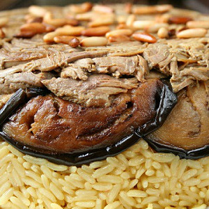

Maqluba (Upside down eggplant and rice)
A feast for your eyes and belly, maqluba is a Syrian specialty for your special occasions. It can be made with beef or chicken using eggplants, or substitute with cauliflower or mushrooms and turn all upside down!

Tabouli Salad
A staple salad at Syrian restaurants, this colorful dish is made with the freshest ingredients, bring spring time to any table. Finely-chopped parsley, tomato and burgul are dressed with lemon and olive oil. Reserve your best olive oil for this dish as it showcases its full flavor!

Ghraybeh (Syrian Sugar Cookies)
These melt-in-your-mouth sugar cookies are easy to make. You only need three ingredients to make a dessert loved by all, big and small!
.svg/440px-Jordan_(orthographic_projection).svg.png)